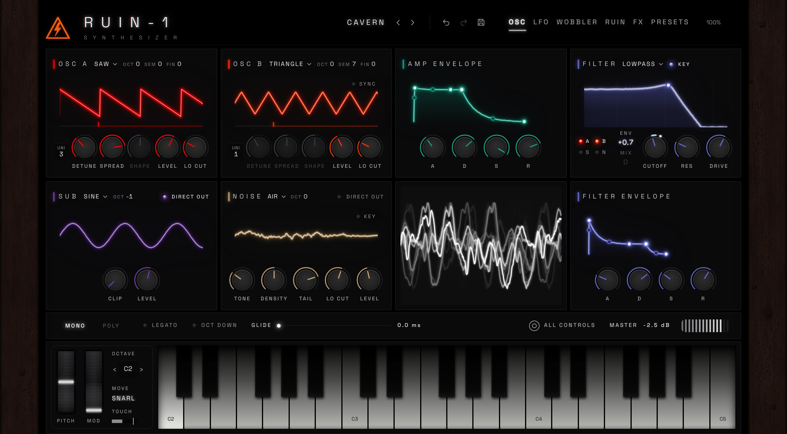

Sound
Trailer
Inside
Every page lights up.
01 / 06
Sound source
Two oscillators with up to seven unison voices, a clean sine sub on its own path and fourteen noise textures, into the filter and its envelope.
Specs
Light on the machine.
3%CPU per voice
25 MBInstall size
0Internet needed
8Voices
VST3 and standalone on Windows 10+ and macOS 11+. AU coming. No account, never online.